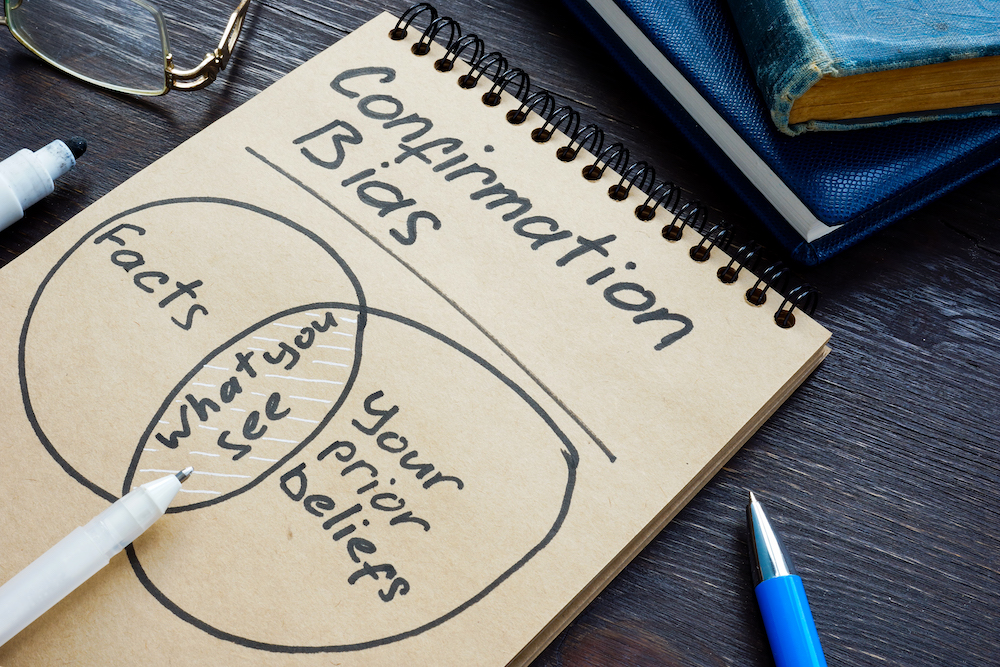

Decision Intelligence in IT Architecture

IN THIS SECTION, YOU WILL: Learn the basics of decision intelligence, the discipline of turning information into better actions, and its relevance for IT architecture practice.
KEY POINTS:
- Decision intelligence is the discipline of turning information into better actions.
- A decision involves more than just selecting from available options; it represents a commitment of resources you cannot take back.
- Many factors make the decision-making process more or less complex, such as the number of options, costs, cognitive load, emotions, and access to information.
- Decision-making is a human activity subject to human biases and limitations. Fundamental biases influencing decision-making include outcome, hindsight, and confirmation bias.
- Data can significantly include decision-making, But data do not guarantee objectivity and can sometimes lead to even more subjectivity.
In their daily work, IT architects are involved in decision-making in several ways:
- By making decisions (e.g., moving applications from a private data center to a public cloud).
- By creating mechanisms for teams to make better decisions (e.g., via advisory forums).
- By creating options for teams to make decisions later (e.g., by creating horizontally scalable systems, development teams have more flexibility about server sizes and numbers, as additional servers can be purchased later at a known unit cost).
Excessive complexity is nature’s punishment for organizations that are unable to make decisions. -Gregor Hohpe
Decision intelligence is a new discipline concerned with selecting between options. It combines the best of applied data science, social science, and managerial science into a unified field that helps people use data to improve their lives, businesses, and the world around them. Cassie Kozyrkov has popularized the field of decision intelligence and created several valuable resources to understand the decision-making process. I recommended her posts and online lessons to all architects because decision-making is an essential part of IT architects’ job. No matter what you are doing, decision intelligence is a crucial skill. The future of IT architecture will be closely related to decision intelligence. In this chapter, I summarized some of the critical lessons I learned from Cassie Kozyrkov’s resources.
Basics of Decision-Making
Let’s starts wit some basics: definition of a decisions, outcomes, goals, and biases.
Decision Is More Than Selecting Among Options
Kozyrkov defines a decision as more than just selecting from available options. A decision represents a commitment of resources that cannot be taken back. These resources could be monetary, physical actions, time, or opportunities. For example, choosing between two options may seem cost-free initially. However, the chance to select the other is lost once you decide on one. This loss of opportunity is considered an irrevocable allocation of resources where the opportunity itself is valuable.
If there is no irreversible allocation of resources, we cannot talk about decisions. Ivory tower architects who make “principal decisions” that no one follows are technically not making any decisions.
Outcome = Decision x Luck
An outcome is a result of a decision. It is influenced by two factors: the quality of the decision-making process and an element of randomness, which can be thought of as luck.
We can only control our decision process. Luck is beyond our control and often plays a role in complex situations. If we only consider the outcome, we can mistakenly attribute good luck to good decision-making skills, and bad luck to bad decision-making skills.
To judge a decision, we should not look at the outcome only, but we need to understand the context and information available at the time of the decision. For instance, imagine you are driving a car on the road, and your navigation system gives you two routes you could follow, one 30 minutes shorter. You decide to follow the shortest route. But 10 minutes after you choose to follow that route, the accident happens on your route, which creates a traffic jam, where you spend an hour more than if you were following another route. Does that mean your decision was wrong and you should follow longer routes next time? No. All information known at the time of the decision pointed out that following the first route would save time and energy (and create less CO2 emission). But traffic and all realistic real-world situations have randomness, such incidents beyond your control. So you’ve made a wise decision, but the outcome was terrible.
Economics of Decision-Making
I’ve frequently been part of trivial decisions that wasted many people’s time and energy. For instance, doing a three-month-long procurement process with dozens of steps involving dozens of people for a renewal of IT licenses worth a few hundred dollars per month.
Not all decisions are worthwhile the effort invested to make them. The “value of clairvoyance” concept (also called the value of perfect information) in decision analysis can help you gauge the appropriate amount of effort, information, and resources to invest in a decision.
For low-value decisions, perfectionism is unnecessary. Conversely, high-value decisions warrant a substantial investment of resources. To approach decision-making effectively, Kozyrkov recommends to:
- Start by visualizing your decision’s potential best and worst outcomes to understand the stakes involved.
- Next, apply the “value of clairvoyance” technique. Imagine having access to a psychic who can predict the future, offering the perfect answer to your decision. Consider the maximum amount of resources – money, time, or effort – you would be willing to expend for this ideal insight. This exercise helps determine the actual value of achieving perfect clarity and making the best possible choice.
If you realize the value of perfect information is low for a particular decision, it’s more efficient to rely on intuition. This approach helps balance the investment in decision-making with the importance of the decision itself.
Preparing for Making Decisions
Decisions are steering wheels for reaching our goals. Consequently, it is crucial to understand and define goals properly. And to understand if there is a decision to be made at all.
Setting Goals
Effective goal setting involves understanding your priorities and opportunities. It’s pointless to set goals misaligned with your opportunities or without knowing your priorities. By identifying what matters most to you and discarding others’ non-priorities, you can focus on what’s truly important.
Common mistakes in goal setting include creating goals that are either too vague, leading to deprioritization, or too concrete, potentially harming well-being. The solution lies in having layered goals, each serving different purposes. In managerial sciences, goals are classified into three types: outcome, performance, and process goals:
-
Outcome goals represent the ultimate win but might be vague and influenced by external factors. An example is aiming to be as healthy as possible, which is difficult to measure and control.
-
Performance goals are measurable and, if realistic, mostly within your control, like running five miles in under 45 minutes. However, they might be aspirational and challenging to manage in detail.
-
Process goals are both measurable and entirely within your control, such as running for 45 minutes every other day, regardless of speed or distance. They provide a trackable process but should always align with and serve the outcome goal.
Be cautious not to let process goals overshadow your ultimate objectives. Wise goal setting involves a layered approach, aligning your goals with your priorities, setting aspirational targets, and establishing manageable processes, all while staying flexible and responsive to your needs and circumstances.
Aligning Goals: The Principal-Agent Problem
One of the common problems with goal setting in complex organizations is the principal-agent problem. This concept from economics highlights a common issue in business and personal decision-making: the interests of the decision-maker (agent) differ from those of the owner or principal. For example, the owners (principals) may prioritize growth in a business, while the managers (agents) might seek personal benefits like increased leisure time or higher salaries. This conflict of interest can lead to mismanagement if addressed. In IT, one typical issue is software technology selections. Individual teams may prefer to use different technologies based on their knowledge and personal references. However, allowing each team total freedom may increase the complexity and diversity of the technology landscape. But for an IT organization, it is usually better to keep the number of technologies we use to a minimum to efficiently train new people, maintain our code, and support moves between teams.
The principal must establish rules or constraints to align the agent’s decisions with their interests. This concept can also apply to personal decision-making, particularly in balancing short-term desires and long-term goals.
By pre-emptively setting constraints, you can help steer your choices towards long-term goals and avoid decisions that may seem appealing in the short term but are detrimental in the long run. For instance, in our example of technology selection, one approach I often used to define constraints in the form of golden paths, supporting limited technology sets only, and making it difficult to use other.
Is There A Decision To Be Made?
In decision-making, mainly when you’re not the primary decision-maker, it’s crucial to determine how you can contribute effectively as a decision expert. The first step to determine is if there is a decision to be made. Sometimes, the primary decision maker has already been made a decision in their mind, and they may need your input only to confirm their decision or tick the boxes in the process.
Before you invest your time and energy in pretending you are making a decision, you need to be clear about whether there is a possibility of making a decision. According to Cassie, the key to answering this question lies in two steps. First, determine what the primary decision maker would do without your involvement. Then, ask them a strategic question: “What would it take to change your mind?” If the answer to this question is “Nothing!”, then you cannot make any new decisions.
This question is powerful for several reasons:
- Initiates Insightful Conversations: It opens up a dialogue revealing necessary information about the decision-making process and the decision-maker’s mindset.
- Identifies the Decision-Maker: The response helps you understand if the person you’re speaking with holds the decision-making authority, addressing the issue highlighted in the previous video.
- Determines the Presence of a Real Decision: Understanding if any information could alter the decision-maker’s stance is crucial. If their mind is already made up and no information could change them, then there isn’t an actual decision to be made; any data provided would be for persuasion rather than for aiding in decision-making.
In essence, this question helps assess the decision-making landscape, the openness of the decision-maker to new information, and whether there’s genuine room for making or influencing a decision.
Factors Influencing Decision-Making
Some decisions are easier to make, and in some situations, we can make decisions easier. Here, we explore key factors influencing decision-making complexity and decisiveness.
Decision-Making Complexity
Some decisions are easier to make than others. Kozyrkov identifies 14 factors that can make decision-making more or less complex:
Number of options
Decision-making becomes simpler with fewer options. When choosing between a limited number of options, it’s straightforward. However, as more options, especially combined choices, are introduced, the process becomes more complex, involving compound decision-making (several dependent decisions you must make together). The simplest scenario is a straightforward yes or no decision.
Clarity of options’ boundaries
Some decisions are straightforward when the choice is clear-cut, like choosing between a rock and an apple, where the preferable option is obvious. Deciding between two varieties of apples is slightly more challenging but remains easy if the decision isn’t significant or high-stakes.
Clarity of objectives
Having clear objectives is another factor that simplifies decision-making. It involves considering the most effective approach to the decision and quickly determining the criteria for making that choice.
Cost of making a decision
Low-cost is another aspect that simplifies decision-making, encompassing various types of costs. These include the effort required to evaluate information, the ease of implementing the decision, and the potential consequences of any mistakes. Decisions are more straightforward when these associated costs are low.
Costs of reversing a decision
While decisions typically involve a commitment of resources you can’t undo, some decisions are considered reversible. If you can change your decision easily and with little cost, the consequences of a wrong choice are less severe, making the decision easier.
Cognitive load
If a decision requires significant mental effort, such as remembering many details or making choices while distracted, it becomes more challenging. On the other hand, if you can make the decision easily and consistently, even amidst other tasks or distractions, then it’s a simpler decision.
A lot of the work of IT architects is creating visualizations and abstractions that can reduce cognitive load and make it easier to understand complex systems to make better decisions about them.
Emotional impact
If a decision doesn’t evoke strong emotions or significantly affect you emotionally, it tends to be easier. Conversely, decisions that stir up intense emotions or leave you highly agitated are more difficult.
For instance, the company’s decision to use only one frontend programming language significantly affects people unfamiliar with the choice, as they cannot perform at a senior level in new technology for a long time and need to learn many new things. Many people negatively affected by this choice may decide to leave and find a job where they can work with technologies they are experts in. So, a simple technological decision quickly becomes a personal career-making choice and an HR issue.
Pressure and stress
Decisions made under conditions of low pressure and stress are generally easier, whereas those made in high-pressure, stressful situations are more challenging.
Access to information
Decisions are easier when you have complete and reliable information readily available. In contrast, making decisions with only partial information and uncertain probabilities is more challenging. As discussed in the context of statistics, having limited information complicates the decision process.
Risks and ambiguity
Decisions become simpler when there is no risk or ambiguity involved. Risk and ambiguity, though different, both complicate decision-making. Ambiguity arises when the probabilities of outcomes are unknown, making choices uncertain. Risk, on the other hand, involves taking a known gamble, where you understand the potential consequences and likelihoods.
Timing
Difficulties arise either when the decision’s timing conflicts with other simultaneous decisions or when there’s insufficient time to consider the choice thoroughly. Situations requiring a rapid response can add significant pressure, making the decision process more challenging.
Impact on others
Making decisions alone is generally easier. When you’re the sole decision-maker, without involving others, and the decision’s outcome impacts only you, the process is simpler. In contrast, making decisions in a social context is more complex. Factors like social scrutiny, considering the impact on others, balancing different preferences and opinions, and the potential effect on your reputation add to the difficulty.
Internal conflicts
For example, experiencing a conflict between wanting to play outside and needing to study for an exam can make it difficult to decide. Decisions are harder when there are such internal conflicts, as opposed to situations where all motivations and incentives align with the decision.
Adversarial dynamics
Finally, adversarial dynamics impact decision-making. When you face competition or opposition from others, these decisions become more challenging compared to those made cooperatively or independently.
Factor Influencing Decisiveness
Even when decisions can be made quickly, we may still need to be more confident. People can be indecisive for various reasons.
Bad habits
One common cause of indecisiveness is a bad habit. Many don’t recognize that avoiding a decision is, in itself, a decision. Delaying, postponing, or deprioritizing the decision-making process is a resulting implicit choice.
Overwhelmed by numerous decisions
Indecisiveness can stem from being overwhelmed by numerous decisions, especially those of lower priority. Our cognitive capacity is limited; we can’t focus intensely on everything simultaneously. If too much attention is devoted to trivial choices, it leaves less mental bandwidth for more significant decisions. In essence, indecisiveness may indicate a struggle to recognize and prioritize what truly matters. It highlights the need for intentional effort to allocate time and thought to key decisions aligned with one’s priorities. This intentionality is crucial for effective decision-making.
Emotions and grief
Indecisiveness can also arise from emotional responses, mainly **when all options are undesirable((. In such cases, the most practical approach is to choose the least bad option. After thoroughly evaluating the choices and identifying the least detrimental ones, proceeding with that decision is essential.
However, people often become overwhelmed by emotions like grief or frustration when faced with only unfavorable choices. This emotional response can lead to a futile search for better options, hoping for new information that realistically won’t appear. Once it’s clear that no better options will emerge, it takes courage to move forward and execute the chosen path.
It’s okay to experience and process these emotions, but you should do it concurrently with taking action. On the other hand, when faced with multiple equally appealing options, and the differences between them are minor, it might not be worth the effort to optimize further. In these cases, recognizing that fine-tuning small differences isn’t a priority can help make a decision.
If you’re struggling to choose between options that seem equally good, consider using a simple method like flipping a coin. If the result of the coin flip leaves you feeling particularly disappointed, it might indicate that the options were more different than you initially thought. This reaction can provide insight and help you make your decision. However, if the differences between the options are minor, it’s not worth spending excessive time trying to make the perfect choice. Instead, conserve your energy for more significant decisions.
The Human Side of Decision-Making
Decision-making is a human activity subject to human ingenuity, as well as biases and limitations.
Outcome Bias
The risk in decision-making is developing an outcome bias, where you focus too much on the results rather than the quality of the decision-making process. You’re learning the wrong lesson if you experience an unlucky result and mistakenly conclude that you chose a bad option. Such wrong interpretation could lead you to make wrong choices in the future.
As mentioned earlier, an outcome is distinct from a decision; the result follows a decision. It’s entirely possible to make a sound decision but still end up with an unfavorable outcome. It’s important to remember that the decision-making process, randomness, or luck influence outcomes. Luck is beyond our control and often a significant factor in complex situations.

If you only consider the outcome without understanding the context and information available when the decision was made, it can lead to misjudging people’s abilities. You might end up rewarding or punishing people based on a mix of luck and skill without knowing how much luck contributed to their success. Therefore, it’s crucial to assess whether people’s successes are due to good decision-making or merely luck and not to overemphasize the outcome when evaluating decisions.
Hindsight Bias
Understanding decisions retrospectively can be misleading due to hindsight bias, where things seem obvious after the fact, even though they weren’t known at the time. Again, the accurate way to evaluate a decision is by examining the information and context available when the decision was made.
Consider what factors the decision-maker took into account, how they gathered information, and the sources they used. It’s also important to assess whether the amount of information collected was appropriate for the decision’s stakes.
Without recording this process, it’s challenging to judge the quality of decisions made by yourself or others, hindering personal growth in decision-making skills. The key takeaway is the importance of documenting the decision-making process. This documentation helps distinguish between the influences of luck and skill in outcomes, ensuring you learn the correct lessons from your experiences. Putting more effort into recording decision processes is vital for this analysis.
Confirmation Bias
Confirmation bias is a psychological phenomenon where your pre-existing beliefs influence how you interpret new information. This phenomenon means that when you encounter a fact, your perception and understanding are not entirely objective. Your interpretation, memory, and attention to this information are shaped by your beliefs, even before you encounter them.
Awareness of this bias is crucial because it means your brain may unconsciously interpret new data in a way that reinforces your pre-existing beliefs, even when you think you’re being objective. This subconscious inclination can skew your understanding and decision-making without realizing it.
Businesses are increasingly hiring data scientists to make what they believe are unbiased, data-driven decisions. However, these decisions often aren’t genuinely driven by data. For a decision to be truly data-driven, it should be the data itself guiding the choice, not preconceived notions or biases, a concept that sounds straightforward but is seldom practiced.
The tendency to selectively interpret data to confirm pre-existing beliefs is a typical example of a confirmation bias. Complex mathematical analysis doesn’t solve this bias; it can even obscure it. Often, even if meticulously done, extensive data analysis ends up being overlooked or misinterpreted through confirmation bias. This results in decisions that are no different than if the data were never analyzed. The critical problem is the tendency to adjust interpretations after seeing the data.
The solution to counter confirmation bias involves setting clear objectives before examining the data. Think about what the data means to you before seeing it. This approach helps make truly data-driven decisions, as it counters inherent biases in human thinking.
To use data effectively for generating questions and finding answers, separate your dataset into two parts: one for analytics and the other for statistics, and never mix them. This separation is crucial in preventing goalpost shifting after seeing the data.

Other Human Factors
In a well-known behavioral economics study, researchers presented decision-makers with identical facts but used different wording. Despite the same underlying information, the decisions varied. Merely changing the phrasing or adding unrelated details can significantly alter people’s choices. Our minds are susceptible to cognitive biases and illusions, even in the face of factual data.
This finding implies that interacting with data is not purely an objective process. How we cognitively engage with data matters. While we can use data to enhance objectivity, it can reinforce pre-existing beliefs if not approached critically. This tendency can strengthen our existing convictions instead of providing new insights, counteracting the goal of objectivity and learning.
Your decision-making ability is not always at its peak, especially when you’re sleep-deprived, hungry, emotionally stressed, or under significant pressure. These biological and emotional states can impact your ability to make optimal decisions. It’s a misconception to believe that sheer willpower or extensive knowledge about decision-making can always lead to the best outcomes.
A striking example of this is found in the legal system, where studies have shown that judges can give different sentences before and after lunch. Even highly experienced and knowledgeable individuals, like judges, who make critical decisions, can be influenced by factors like hunger or the need for a break. This realization should be a cautionary note about the limitations and vulnerabilities of our decision-making processes.
Intuition
Human intuition plays a vital role in decision-making. Robert Glass provided one of the best definitions of intuitions, describing it as a function of our mind that allows it to access a rich fund of historically gleaned information we are not necessarily aware we possess by a method we do not understand (Glass, 2006; page 125). Our unawareness of such knowledge does not mean we cannot use it.
In the context of decision-making, one of the main advantages of intuition is that accessing it is a rapid process, making intuitive decisions straightforward. Intuition is particularly useful for low-value decisions with low stakes, and a quick resolution is preferable. As we’ll explore in future discussions on prioritization and decisiveness, seeking perfection in every decision is impractical due to limited time and energy. Therefore, it’s essential to choose where to focus your efforts.
Intuition is especially appropriate under certain conditions:
- Time Pressure: When time is limited and a detailed analysis isn’t feasible, intuition can guide you.
- Expertise: If you have experience in a particular area, relying on intuition makes sense, as you’ve likely faced similar decisions before. In contrast, in unfamiliar contexts, intuition may not be reliable.
- Unstructured Decisions: Intuition can be valuable for decisions that lack a clear framework, like judging the quality of art. Expertise in the relevant field enhances the effectiveness of intuitive judgments.
Conversely, you should avoid relying on intuition too much in situations where more effort is warranted, including those with ample time, high importance, lack of expertise, and a structured decision-making process. For instance, as a trained statistician playing card games, calculating probabilities can give you an advantage over others relying solely on intuition.
Improving Decision Making With Data and Tools
Decision-making has evolved beyond pen and paper, with data playing a crucial role in modern methods. Data, like the one I use in Data Foundation, while visually appealing and powerful when used correctly, is only a tool to assist in making informed decisions. It’s a means to an impactful end, but without purposeful application, data is ineffective.
Data has limitations. Just as not everything written in a book is true, data can be misleading or incomplete. It’s a collection of information recorded by humans, subject to errors and omissions.
For instance, in the field of artificial intelligence (AI), AI biases stem from the data it’s fed, reflecting the choices and prejudices of those who compile the data. The issues with AI bias are often due to poor decisions regarding data selection. Data isn’t inherently objective; it carries the implicit values of its creators.
It is crucial to understand that data’s value lies in its ability to enhance memory, not ensure objectivity. Embracing data means embracing a significant advancement in human potential. It’s about transforming information into action, extending beyond the limits of personal memory to make better, more informed decisions.
Cassie Kozyrkov classifies techniques for the use of data into three groups:
- Analytics: which you can use to get inspired by looking at data,
- Statistics: which you can use to make decisions when you need to deal with incomplete information and uncertainty,
- Machine Learning (ML)/AI: which you can use to deal with a huge number of decisions and vast volumes of data.
When used correctly, data and the techniques mentioned can enable us to ask better questions and give better answers.
Good questions often stem from being well-informed, much like gaining insight from looking out of a window in a dark room. Analytics is a discipline that uses data in this fashion, providing a view of the available information. It helps identify viable options, reasonable assumptions, and meaningful questions. Data and Analytics can inspire better questioning by revealing insights that were previously unseen.
However, looking at data and doing analytics itself isn’t decision-making. As a decision maker, your role is to set priorities, choose relevant topics, frame the right questions, and guide the analysis focus. If the analysis finds nothing intriguing, it’s not a failure; it’s an opportunity to explore new areas. Analytics is a vital sensory upgrade for modern decision-making, enabling a broader and deeper understanding of the information landscape.
Once when we have better questions, we can also use data to give better answers. Depending on the important and type of questions you need to answer, you can get your answers via simple analytics, more complex statistical methods, or even advanced machine-learning and AI techniques.
No matter which how you plan to use data, full information is always preferable to partial information. If you only have partial information, you’re dealing with uncertainty, and that’s where statistical methods come in. Statistics is used when you don’t have all the facts and need to manage uncertainty. They can help you balance the likelihood of a wrong decision against your data budget, considering your risk preferences. As a decision maker, it’s important to ask the right questions and determine which decisions are worth pursuing. Only then should you apply advanced methods where necessary to gain more accurate answers under conditions of uncertainty.
Group Decision-Making
Effective decision-making often involves recognizing that you might not be the sole decision-maker. In organizations, it’s crucial to identify the actual decision-makers and understand how decision responsibility is distributed among them. Mastering this skill is essential for navigating organizational decision-making processes. It’s important to question who really has the final say in decisions. In many cases, decision-making is more complex than it appears.
Group decision-making offers significant advantages. While you might believe you have the best solutions, incorporating diverse perspectives can help cover your blind spots. Multiple decision-makers can counterbalance the extreme tendencies of an individual and compensate for human limitations like fatigue.
While group decision-making might sometimes constrain individual creativity, it also provides safeguards against poor decisions and aligns individual motives with the organization’s goals (see the principal-agent problem in the next section). Having several independent decision-makers can align individual incentives with the organization’s needs, addressing this problem.
However, group decision-making isn’t perfect. It increases complexity as it requires higher decision-making skills from each member. True collaboration in decision-making is more challenging than individual decision-making. It also tends to slow down the decision process.
Moreover, the benefits of group decision-making, like balancing individual biases, rely on the independence of the decision-makers. If everyone is in the same room, independence can be compromised by factors like charisma or status, potentially allowing the loudest voice to dominate, rather than the wisest.
Group settings can also devolve into social exercises, where personal ego overshadows open-mindedness to new information. Being aware of these pitfalls allows you to create rules that foster independent perspectives.
The role of the note-taker in group settings is also influential, as is the phenomenon of responsibility diffusion, where unclear responsibilities lead to reduced individual contribution.
In summary, the more people involved in a decision, the higher the skill level required to maximize the benefits and minimize the downsides of group decision-making. It’s vital to structure the process to maintain independence, possibly by limiting decision-makers and increasing advisors. This approach distinguishes between making a decision and advocating for the execution of an already-made decision.
Questions to Consider
-
Decision-Making in IT Architecture: How do you typically approach decision-making in your professional role, and in what ways could you incorporate the principles of decision intelligence to enhance your decision-making process?
-
Excessive Complexity and Organizational Decision-Making: Have you observed instances where excessive complexity in your organization resulted from poor decision-making? How can IT architects address this, and what role can they play in simplifying decision-making processes?
-
Understanding Decisions and Opportunity Costs: Reflect on a recent significant decision you made. Were you aware of the resources you were committing and the opportunities you were preceding? How could you have evaluated these factors more effectively?
-
Outcome vs. Quality of Decision-Making: Think of a situation where the outcome of a decision didn’t align with your expectations. How did you judge the quality of the decision-making process in hindsight, and did you consider the role of luck or randomness?
-
Value of Clairvoyance in Decision-Making: Consider a recent decision you faced. What would have been the value of perfect information in that scenario? How does this concept help you balance the effort and resources you allocate to different decisions?
-
Setting and Aligning Goals: How do you set and align your goals, and what challenges have you faced in this process? Are there instances where misalignment has led to ineffective decision-making?
-
Decision-Making vs. Confirming Choices: Have you ever been in a situation where you thought you were making a decision, but in reality, it was just a formality to confirm a pre-made choice? How can this awareness change your approach to future decisions?
-
Handling Complexity in Decision-Making: What factors have you found to increase the complexity of decision-making in your experience? How do you manage these complexities effectively?
-
Tackling Indecisiveness: Can you identify any habits or emotional factors contributing to your indecisiveness? What strategies can you employ to overcome these challenges?
-
Data and Decision-Making: How do you use data in your decision-making process? Are there instances where data has misled your decisions, and how can you safeguard against this in the future?
-
Balancing Intuition and Analysis: Reflect on a decision where you relied heavily on intuition. In hindsight, was this the right approach, or would a more data-driven analysis have been better?
-
Navigating Group Decision-Making: Consider your role in group decision-making scenarios. What dynamics do you observe, and how do you ensure the decision-making process is effective and balanced?
Doing Architecture ← Doing Architecture: Introduction |
Doing Architecture The Culture Map: Architects' Culture Mindfield Compass → |